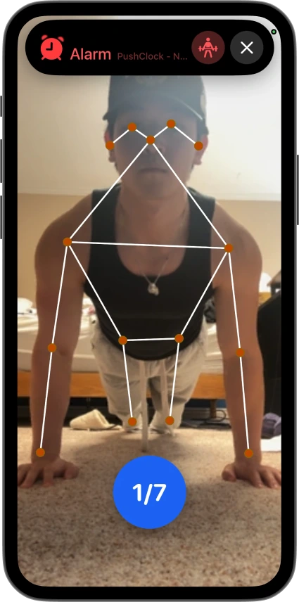

把闹钟当工作流入口：我用 PushClock 搭了一条不耍赖的早起链
以前设五个闹钟还是赖到最后一刻，现在一条链解决起床、清醒、开工三步。本文拆解怎么用 PushClock 的 AI 验证机制嵌进实际工作流，以及那些容易断链的细节怎么处理。
我每周要做一件事——周五早上 9 点前写完周报。这件事以前是我整个工作周最痛苦的环节之一。
旧流程是这样的：手机定 5:40、5:45、5:50、5:55、6:00 五个闹钟。每个闹钟响的时候我都在半梦半醒之间把它按掉，然后继续睡。最后一个闹钟响完，我睁开眼已经 6:40 了，慌慌张张起床、洗漱、冲咖啡，坐到书桌前已经 7:30。大脑要花至少一个小时才能从"还想睡"切换到"能写东西"，周报写完基本 9:30 到 10:00。周五整个上午就这样耗过去了，下午还要补其他积压的事。
问题出在哪？闹钟和"起床"之间的环节太容易作弊。按掉按钮是零成本动作，大脑在半睡状态下根本管不住自己的手。我试过震动闹钟、把手机放远、甚至用那种必须解题才能关的数学闹钟——效果都差不多，作弊成本低到可以忽略。
直到我把 PushClock 嵌进来，整条链才真正跑通。
新流程：一个动作把半睡的大脑拉回现实
PushClock的官网上把这点说得很直白——它和普通闹钟的核心区别就四个字：不能作弊。它不是让你"按一下"或者"解个题"，而是让你完成一个需要物理移动或摄像头验证的真实动作——俯卧撑、深蹲、找一件指定物品、拍一张天空照片——动作没完成，闹钟就一直响。想试试的话安装包从下载拿。
我现在的周五早起链长这样：
5:50 PushClock 闹钟响 → 做 10 个俯卧撑（摄像头计数）
5:53 完成，Streaks +1，洗漱
6:05 坐到书桌前，喝一口提前凉好的温水
6:08 开始写周报
7:30 左右写完初稿少了什么？少了中间那段"按闹钟→翻个身继续睡→最后一个闹钟炸起来"的混乱期。PushClock 的俯卧撑任务是这条链的锚点——它不是闹钟的"附加功能"，而是起床这个动作本身。
为什么选俯卧撑？首先它不需要任何器材，躺在床上就能做（准确说是从床上撑起来做）。其次，一次俯卧撑就是一次完整的身体刺激——从躺着到撑起来，心率立刻上去，大脑被强制拉进清醒状态。5 个或 10 个起步足够，强度可以慢慢加。我现在稳定在 15 个，周末会设一个轻松的任务（摇手机 20 次）让身体有喘息的机会。
实操细节：两条最容易断链的环节
理论很美好，但我实际跑起来发现两个地方特别容易掉链子。这是样本文档里没写但我踩过坑才摸出来的。
第一个断链点：光线和手机位置
PushClock 的姿势验证和运动计数依赖摄像头的关键点识别。第一天我在床头趴着做俯卧撑，手机放在枕头旁边，结果光线不够，摄像头把我的背识别成了"没动"，计数一直卡在 0。闹钟响了两分钟我才反应过来是光线问题。
调整后的做法：
- 手机放在离我做俯卧撑的位置大约 1~2 米远，镜头略微朝上，能拍到完整的上半身
- 打开头顶的小台灯（不要太亮也不要全黑）
- 前几秒的准备时间 PushClock 不计入任务计时，所以先摆好手机、调好光线、再趴下去做
这个调整加起来不超过 30 秒，但第一次忘了调光线直接趴下去，等于闹钟白响了三分钟。
第二个断链点：熬夜后的刚性安排
周四晚上赶项目文档到凌晨一点，周五再设 5:50 的闹钟，做完俯卧撑之后整个人还是昏的，周报质量明显下降。
pushclock文档里提到的做法我很认同：熬夜太晚的话，临时设一个稍后的闹钟 + 最低难度任务。具体到我的流程里，就是把俯卧撑换成"整理床铺"（拍照任务），或者干脆多睡一个小时，设 6:50 的轻量闹钟。Streaks 断了没关系——长期来看，硬撑会让你对整个起床机制产生抵触，反而更容易回到以前的赖床状态。
PushClock 的好处是任务可以随时换——拍照、运动、脑力（解个简单的图形题）、摇手机、步数——总有一种能适配当天的状态。
效果与边界：这条链什么时候划算
跑了三个月之后，这条链给我带来的可量化收益：
- 每周五省了 1.5~2 小时的混乱期（以前 6:40 醒→9:30 写完，现在 5:50 醒→7:30 写完）
- 白天第一段高效工作时间前移了一个小时，相当于每周多了 5 小时的深度工作时间
- 连续天数 Streaks 稳定保持在 40 天以上——这个数字本身就是一种心理锚点，断掉的代价让我舍不得赖床
但这条链也不是万能的。几种场景下它反而不划算：
- 前一天高强度运动之后：俯卧撑会让身体更累，换成整理床铺或摇手机更合适
- 跨时区出差：生物钟完全乱掉，硬套早起链只会适得其反，出差期间改成自然醒 + 当天最轻松的任务
- 周末想放松：周末我会设一个 8 点的闹钟，任务是"找宠物"（我家有只猫），拍一张它趴在窗台的照片就行。还是完成 Streaks 但强度低得多
关于 PushClock 本身
PushClock 这个工具的核心思路其实很朴素——用物理动作打破赖床的大脑回路。它的拍照任务和运动任务背后都有 AI 模型在做验证：俯卧撑的姿势对不对、找物品的照片里有没有那个东西、整理床铺的被子拉平了没。这些细节写得很细，比如整理床铺任务的 AI 判断比你自己的标准更严格，要把被褥大面积褶皱彻底拉平、枕头边缘对齐床头、正对着床略微俯拍才容易通过。
如果你想自己搭一条类似的链，建议从最简单的任务类型开始——摇手机或步数是零门槛选项，不需要摄像头配合。等你能稳定完成一周之后，再换成需要物理移动的任务，比如找物品或俯卧撑。

这套资料GitHub有完整的维护，国内用户访问的话Gitee和GitCode也同步了一份，平时我偶尔会翻一下文档更新有没有新增任务类型。